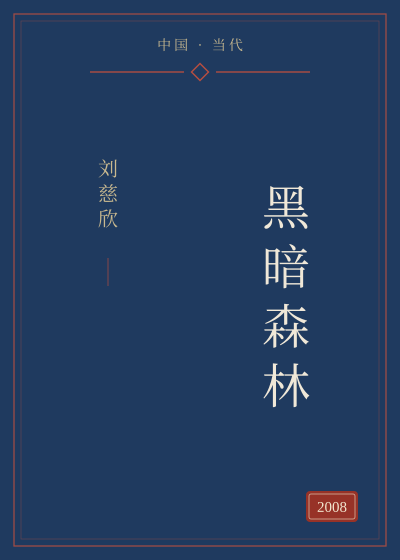
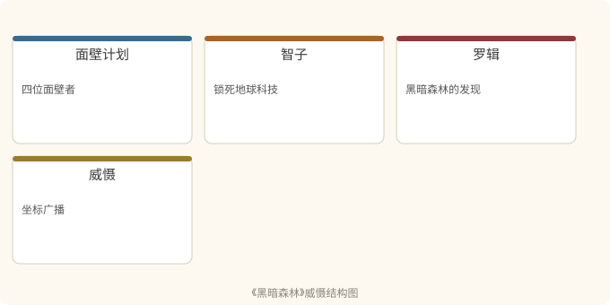

黑暗森林
一、基本信息
| 作者 | 刘慈欣 |
|---|---|
| 成书/出版 | 2008年出版（通说待核；作者页 B088 口径——刘慈欣代表作谱系） Liu Cixin — Encyclopaedia Britannica（百科全书） |
| 国别/地区 | 中国 |
| 时代 | 现当代 · 当代 |
| 体裁 | 长篇科幻小说 |
| 语言 | 汉语（白话） |

《黑暗森林》威慑结构图（主题·结构图）
二、创作背景
作者页（B088）：刘慈欣为以《三体》成名的科幻作家（作者页定位——详见 santi 条）。
'黑暗森林法则'：宇宙社会学两条公理的推演——猜疑链与技术爆炸（通说待核）。
三、内容脉络
面壁计划：四位面壁者对抗三体智子（通说）。
罗辑领悟黑暗森林法则——以星系坐标威慑三体（通说待核）。
四、主要人物表
| 人物 | 身份 | 说明 |
|---|---|---|
| 罗辑 | 面壁者 | 黑暗森林的发现者（通说） |
| 章北海 | 太空军 | 自然选择号（通说待核） |
| 叶文洁 | 智囊 | 宇宙社会学的启发者（通说待核） |
五、主题与艺术特点
- 黑暗森林：生存是文明的第一需要（法则表述待核）。
- 猜疑链与威慑伦理（通说）。
- 硬科幻的中国面孔（通说）。
六、影响与评论
- 作者页：刘慈欣以《三体》系列获得雨果奖（作者页 B088 口径——详见 santi 条）。
Liu Cixin — Encyclopaedia Britannica（百科全书） - 《三体》三部曲被译成多种语言、奥巴马等读者（通说待核）。
Liu Cixin — Encyclopaedia Britannica（百科全书）
七、阅读建议
难点
- 三部曲顺序（《三体》→本作→《死神永生》）。
- 物理设定（智子/水滴）。
- 《黑暗森林》（重庆出版社，通说待核）。
先读《三体》→ 本作 →《死神永生》。
八、待核实
- 2008年重庆出版社初版核对。
- 黑暗森林法则原文表述核对。
- 雨果奖（2015年《三体》第一部）与三部曲整体的关系核对。
本页主要来源
刘慈欣的其他收录作品：三体